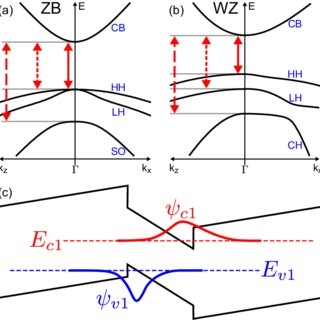

InSb (Indium Antimonide) là hợp chất bán dẫn nhóm III–V.
- Có cấu trúc tinh thể Zinc blende (khối lập phương giả kim cương).
- Hằng số mạng: a ≈ 6,058 Å (Angstrom).

Hình 1: Mô hình cấu trúc tinh thể Zinc blende
InSb là bán dẫn vùng cấm trực tiếp. Cực tiểu vùng dẫn và cực đại vùng hóa trị đều nằm tại điểm K = 0 (tâm vùng Brillouin).
Độ rộng vùng cấm tại 300K: Eg ≈ 0,17 – 0,18 eV.
Tại tâm vùng Brillouin (K=0), vùng hóa trị bị tách thành ba dải năng lượng riêng biệt do hiệu ứng tương tác spin-quỹ đạo (spin-orbit coupling):
- Heavy-hole (HH): Lỗ trống nặng
- Light-hole (LH): Lỗ trống nhẹ
- Split-off band (SO): Vùng tách spin

Hình 2: Cấu trúc vùng năng lượng và sự tách vùng tại K=0